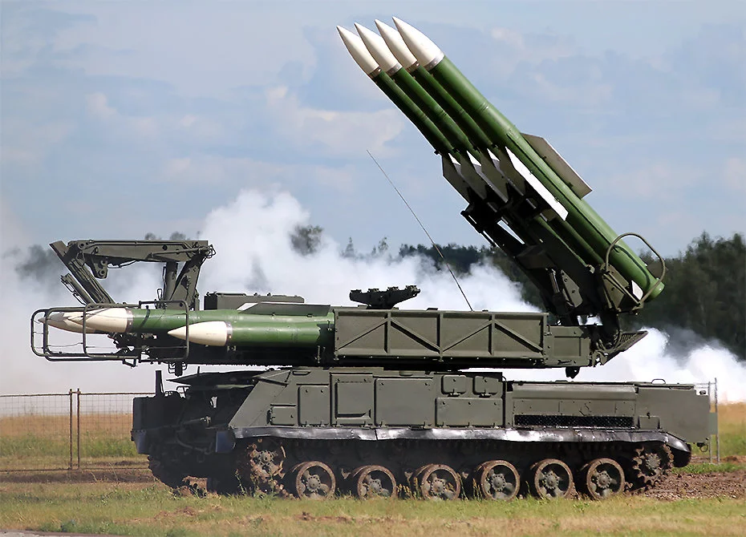
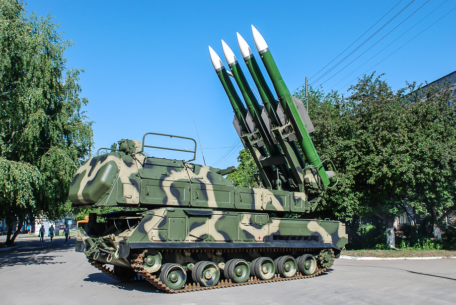
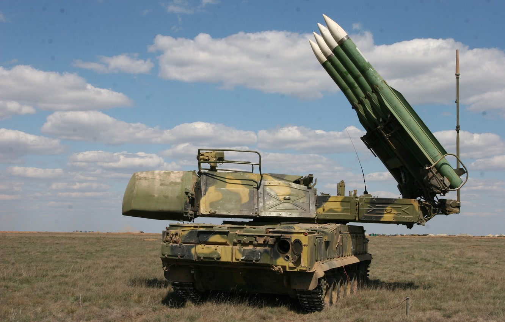
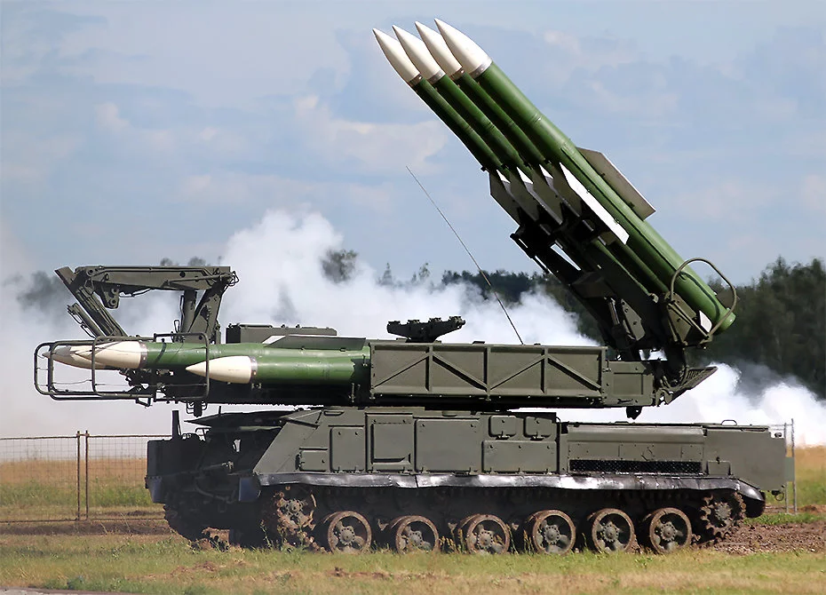
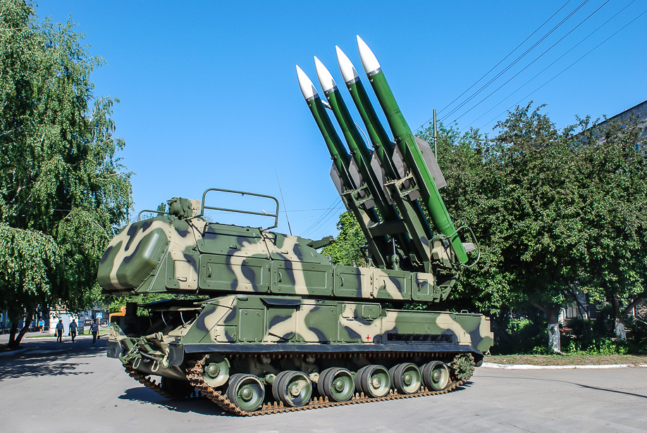
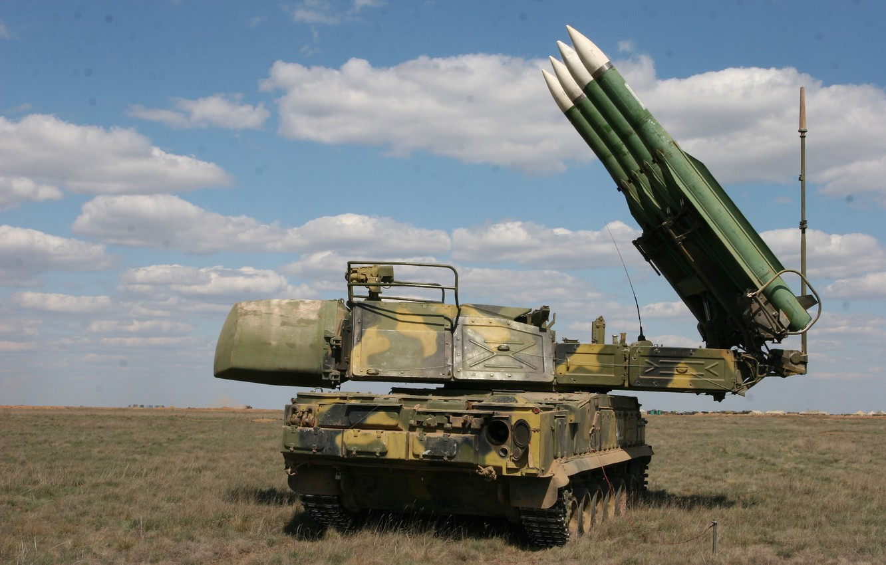

Бук-М2
Элементы комплекса «Бук-М2» выполнены на шасси ГM-569 производства ОАО «Мытищинский машиностроительный завод». Элементы комплекса «Бук-М2Э» (экспортная модификация) по желанию заказчиков выполняются на шасси МЗКТ-69221 производства Volat (ОАО «Минский завод колёсных тягачей»).
Эффективная отражающая поверхность цели (ЭОП): 0,05-0,1 м2; помехоустойчивость:1000Вт/МГц.
История
Разработка завершена в 1988 году. Используется ракета 9М317.
С началом малой модернизации комплекса 9К37 развернулись работы над созданием глубоко модифицированного варианта, способного вести огонь по 24 целям. По сравнению с предыдущими модификациями зона поражения самолётов типа F-15 была увеличена до 50 км, вероятность поражения крылатых ракет ALCM на дальностях до 26 км — от 70 до 80 %, вертолёты могли быть поражены с вероятностью от 70 до 80 %. Максимальная скорость обстреливаемых целей 1100 м/с навстречу и 300—400 м/с вдогон. Комплекс может быть развёрнут за 5 минут, темп стрельбы составляет 4 секунды, а время реакции — 10 с. В 1988 году комплекс был принят на вооружение ПВО СВ. Из-за распада СССР и тяжёлой экономической ситуации России серийное производство комплекса развёрнуто не было. Спустя 15 лет, документация на комплекс была доработана под современную элементную базу серийного производства. С 2008 года комплекс поступил в войска России.
В 1990-е годы был разработан и прошёл совместные испытания вариант комплекса «Бук-М2Э» — «Урал», предназначенный для войск ПВО. Все средства комплекса размещены на колёсных тягачах повышенной проходимости типа КрАЗ и полуприцепах «ЧМЗАП».
22 декабря 2009 года на вручении национальной премии «Золотая идея» (по итогам 2008 г.) Лауреатом 3-ей премии в номинации "За успехи в области производства продукции военного назначения" стал авторский коллектив ОАО «УМЗ» совместно с ОАО «НИИП им.В.В.Тихомирова» за освоение серийного производства зенитного ракетного комплекса «БУК-М2Э».
Распоряжением Правительства Российской Федерации от 28 февраля 2013 года за разработку и серийное освоение ЗРК СД «Бук-М2Э» присвоено звание лауреатов премии Правительства Российской Федерации в области науки и техники за 2012 год авторскому коллективу.
По заявлению Генерального директора холдинга «Авиационное оборудование» «ЗРК Бук-М2Э» на данный момент является самым эффективным средством противовоздушной обороны среднего радиуса действия, превосходящим по дальности и эффективности поражения все существующие мировые аналоги».
Состав комплекса
Боевые средства:
- ЗУР 9М317,
- СОУ 9А317,
- ПЗУ 9А316;
Cредства управления:
- КП 9С510,
- СОЦ 9С18М1-3,
- РПН 9С36.
 





{kind=link}
{kind=link}
{kind=link}